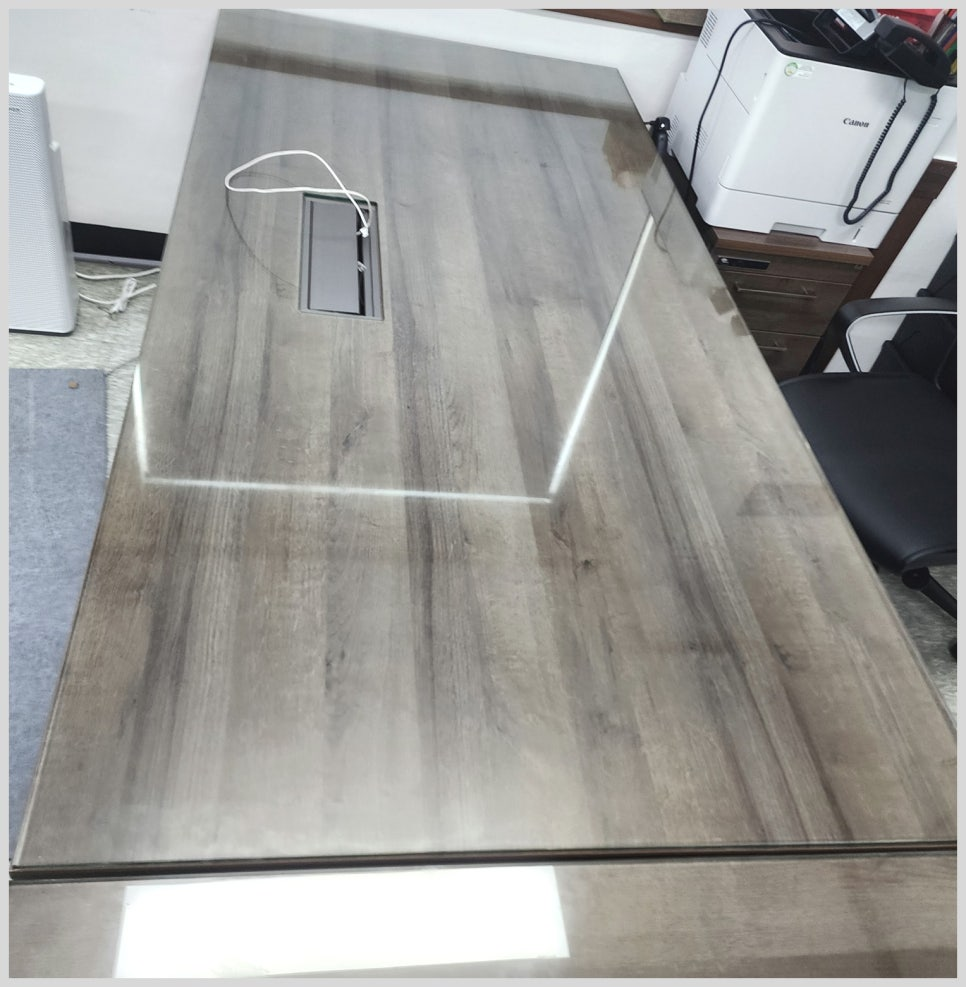
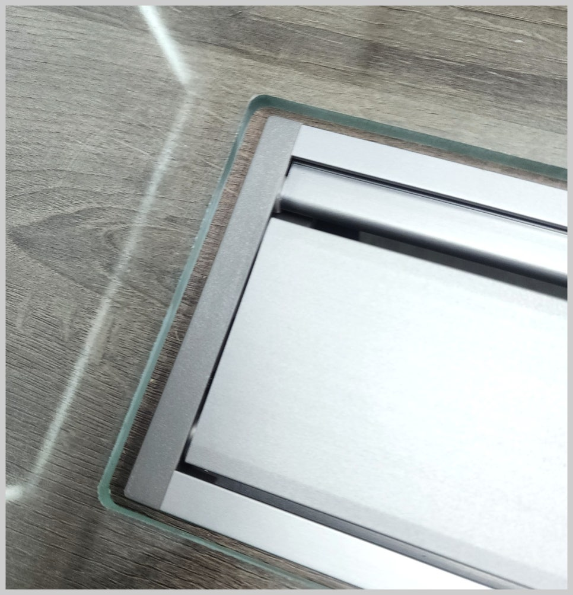
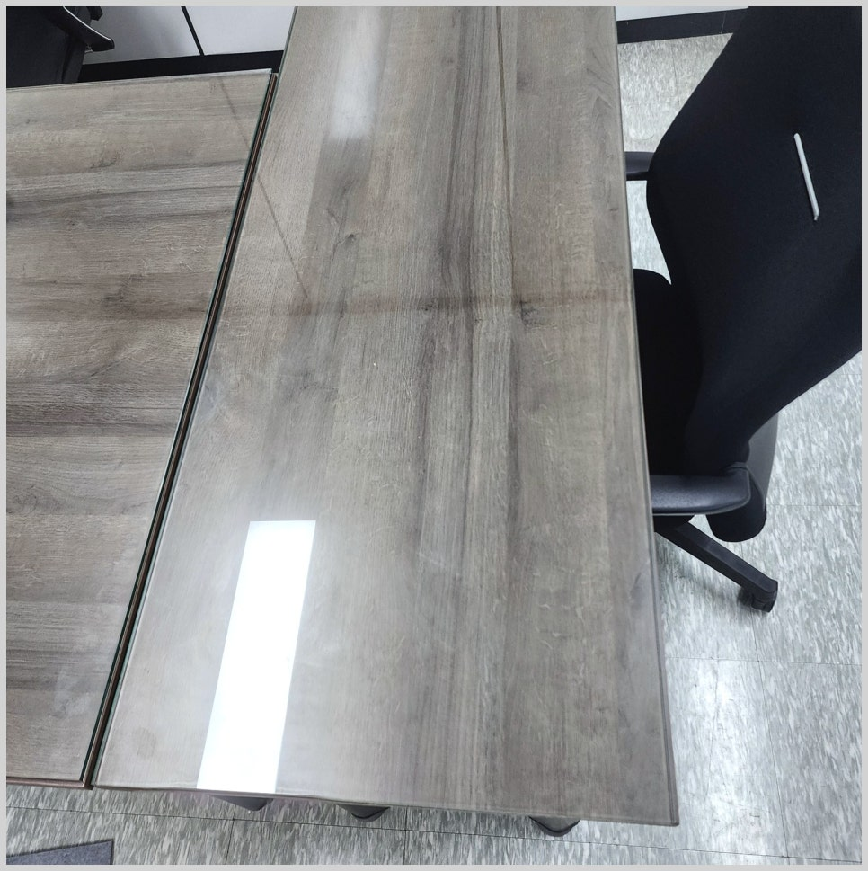

책상 강화유리는 상판이 클수록, 가운데에 구멍이 날수록 두께를 더 신경 써야 합니다. 인천 계양구의 한 사무실에서 상판이 자꾸 긁힌다며, 가운데 박힌 배선함은 계속 쓸 수 있게 유리를 깔아 달라는 연락을 받았습니다. ㄱ자로 이어진 두 책상을 각각 재서 10mm 유리 두 장을 올렸습니다.
한눈에 보기
| 작업 | 업무용 책상 상판 위 강화유리 깔기(2장) |
|---|---|
| 지역 | 인천 계양구(계산동) |
| 장소 | 사무실, ㄱ자로 붙은 본 책상과 옆 보조 책상 |
| 크기 | 본 책상 약 1800×800, 보조 책상 약 1200×500 |
| 유리 | 투명 강화유리 10T(10mm) |
| 가공 | 본 책상 유리 가운데 배선 박스 자리 네모 구멍 1곳(강화 전 가공) |



책상 강화유리 몇 mm가 맞나요? 유리상판 두께별 무게
이 현장 본 책상 크기(약 1800×800)를 기준으로 셈하면 5mm는 18kg 안팎, 8mm는 29kg 안팎, 10mm는 36kg 안팎입니다. 5mm는 가볍고 값이 낮아 집이나 작은 책상에 흔하고, 8mm는 넓은 상판이나 무거운 물건이 자주 오르는 자리에 어울립니다.
여기서 10mm를 고른 까닭은 셋입니다. 1800 길이를 한 판으로 덮어 팔을 기대도 든든해야 했고, 가운데에 네모난 구멍이 나면 그 둘레가 약해지며, 매일 모니터와 서류가 오르고 팔꿈치로 오래 누르는 자리였습니다. 반대로 작은 책상에 두꺼운 판을 얹으면 무게만 늘고 옆면 두께가 도드라져 답답해 보일 수 있습니다.
박스 자리 구멍은 유리를 얹은 다음에 내면 안 되나요?
강화 처리가 끝난 유리는 자르거나 뚫을 수 없습니다. 그래서 현장에서 박스가 놓인 위치와 크기를 먼저 재고, 그 치수대로 구멍을 낸 다음 강화를 거쳤습니다.
구멍은 박스 테두리보다 조금 넉넉하게 잡았습니다. 덕분에 뚜껑을 열고 닫거나 선을 뽑을 때 유리 모서리에 걸리지 않고, 가까이서 보면 구멍 안쪽으로 10mm 단면이 연한 초록빛으로 보입니다.
이 현장 작업 순서
- 본 책상과 보조 책상의 가로·세로, 가운데 박스의 자리와 크기를 각각 쟀습니다.
- ㄱ자를 한 판으로 만들면 50kg이 넘고 안쪽 꺾인 모서리에 힘이 몰려 깨지기 쉬워, 두 책상이 만나는 선에서 유리를 둘로 나눴습니다.
- 잰 치수대로 재단하고 네모 구멍을 낸 뒤 강화했습니다.
- 두 장을 각 상판 끝선에 맞춰 올리고, 만나는 이음 선이 어긋나지 않게 맞췄습니다.
책상유리가격은 무엇에 따라 달라지나요?
크기, 두께, 구멍 개수 세 가지가 기본입니다. 이번 현장은 10mm라 5mm보다 자재값이 올랐고, 본 책상 판 하나가 30kg대여서 나르고 얹는 손도 더 들었습니다.
구멍은 강화 전에 따로 가공하는 일이라 한 곳이 늘 때마다 비용이 붙고, ㄱ자처럼 두 장으로 나누면 장마다 따로 재고 만듭니다. 정해진 가격표가 있는 품목이 아니라서 사진과 치수를 받고 안내해 드립니다.
자주 묻는 질문
- Q. 집 책상에도 10mm를 깔아야 하나요?
- 폭이 1200 이하인 보통 책상이고 구멍이 없으며 위에 무거운 물건이 없다면 5mm로 충분한 경우가 많습니다. 얇을수록 다루기도 쉽습니다.
- Q. 유리를 깔면 책상 나뭇결이 안 보이나요?
- 투명 유리라 나뭇결이 그대로 비칩니다. 다만 천장 조명이 바로 위에 있으면 그 부분만 반사돼 하얗게 보일 수 있습니다.